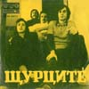
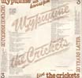
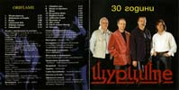
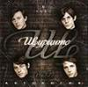
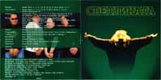

здравейте, това е фен-страница на Щурците, в която съм се постарал да събера на едно място полезна информация за тях
тук можете да намерите:
всички техни песни (включително соловите албуми), които изобщо могат да бъдат намерени някъде (във формат FLAC и компресирани в MP3), или направо в Youtube
биографичната книга за Щурците в PDF
пълна дискография на групата и на отделните и членове, съдържаща обложки в пълен размер
малко снимки с висока резолюция
състав през годините
малкото официални видео клипове
текстове и акорди на почти всички техни песни (също и като архив)
относно страницата
Петър Гюзелев ("Пеци") - китара, вокал, композитор
Веселин Кисьов - китара (до 1969)
Петър Цанков - ударни инструменти (до 1971)
Константин Атанасов ("Косьо Щуреца") - китара, вокал (1969 – 1971, 1973 - 1974, 1976)
Атанас Атанасов ("Насо") - ударни инструменти (1973 – 1974)
Георги Марков ("Жоро") - ударни инструменти (от 1974)
Борислав Панов ("Боти") - клавирни, вокал, цигулка (1974 – 1976)
Владимир Тотев ("Валди") - клавирни, вокал, композитор (от 1976)
начало


начало
1968


Звън
Малкият светъл прозорец
Веселина
Изпращане
1969


Песен за Щурците
И една звезда
Стар албум
С китара по света
1973



Ще срещнем нашата мечта
Две момчета
Виолета
Капитан


Пеликани върху сал
Аз съм човек
Ние стопаните
Песничка за модата
1975


Ти не разбра
Песен за теб


Песен за атомната гъба
Училище за малки и големи
1976 "ЩУРЦИТЕ I"


На прага
Говори се за нещо
Сянка на птица
Дай ми малко нежност
Обич
А утре
Далечен залив
Моят син
Вишнев цвят
Дяволски сезон
1978 "ЩУРЦИТЕ II"
Някои от вас
Гатанки, ладанки
Бяла светлина
Звезден път
Кой е той
Манекени
Сила
Карат
1980 "XX ВЕК"


XX век
Сватбен ден
Две следи
Зов
Среща
Слънчево пътуване
Загадка
Жулиета
Песен за детските камбани
Пролетният вятър
Сняг от детството
1982 "ВКУСЪТ НА ВРЕМЕТО"


Вкусът на времето
Прощаване
Момче от групата
Цветелина
Зад вратата
Очакване
Вълшебен цвят
Малкият мъж
Имаш ли приятел
Звезден час
Облог
Огнен знак
Златен дим
Необходимост
Ален Делон
Подай ръка
Еньовден
Търсим своята мечта
Вечерна забрава
Ден първи
1985 "КОННИКЪТ"


Рок в минало време
S.O.S
Надежда от "Надежда"
Неизживените неща
Хамлет (Накъде)
Конникът
Не умирай
Ти и аз
От ден на ден
Стълбата
1987 "МУСКЕТАРСКИ МАРШ"


Мускетарски марш
Навечерие
Педя човек
Нощен блок
Когато си отива любовта
Ритъм в розово
Омагьосаният замък
Футуролог
20 години по-късно
По пътя
1988 "20 ГОДИНИ ПО-КЪСНО"


Интродукция
Конникът
20 години по-късно
Футуролог
Имаш ли приятел
Китка - Щурците
Две следи
Сватбен ден
Помниш ли
Вълшебен цвят


Някои от вас
Говори се за нещо
Момче от групата
Един музикант
Песен за Щурците
Ритъм в розово
Кой е той
Еньовден
Хамлет (Накъде)



Рок в минало време
Среща
Стълбата
Не умирай
XX век
Педя човек
Вкусът на времето


1998 "30 ГОДИНИ ЩУРЦИТЕ"

Твоят трилър
Животът си върви
Вчера
Светлият век
Новата порода
Равновесие
Сватбен ден
Имаш ли приятел
Жена
Вълшебен цвят
Вярвам в теб
Дяволски сезон
Помниш ли
Две следи
Рок в минало време
Хамлет (Накъде)


2004 "АНТОЛОГИЯ - ЧАСТ I (1967-77)"

На прага
Говори се за нещо
Дай ми малко нежност
Звън
Изпращане
Веселина
Малкият светъл прозорец
Песен за Щурците
Стар албум
С китара по света
И една звезда
Далечен залив
Дяволски сезон
Снежна приказкa
Зората
Така било е
Ти не разбра
Песен за теб
2004 "АНТОЛОГИЯ - ЧАСТ II (1978-82)"

20-ти век
Две следи
Среща
Някои от нас
Кой е той
Звезден път
Ален Делон
Помниш ли
Облог
Сватбен ден
Прощаване
Жулиета
Ден първи
Слънчево пътуване
Сняг от детството
Имаш ли приятел
Звезден час
Зад вратата
2004 "АНТОЛОГИЯ - ЧАСТ III (1982-86)"

Вкусът на времето
Вълшебен цвят
Рок в минало време
S.O.S
Надежда от "Надежда"
Не умирай
Цветелина
Неизживените неща
Хамлет
Конникът
Момче от групата
Ти и аз
Очакване
Пред парадния вход
От ден на ден
Еньовден
Малкият мъж
Стълбата
2004 "АНТОЛОГИЯ - ЧАСТ IV (1987-98)"

Мускетарски марш
Клетва
Футуролог
Чичовата - кичовата
Когато си отива любовта
Педя човек
Нощен блок
Ритъм в розово
Навечерие
Животът си върви
Омагьосаният замък
Вчера
20 години по-късно
Светлият век
Аз съм просто човек
Предчувствие
По пътя
2004 "АНТОЛОГИЯ - KOНЦЕРТЪТ"


Конникът
Мускетарски марш
Сватбен ден
Футуролог
Чичовата кичова
Навечерие
Имаш ли приятел
Пред парадния вход
Когато си отива любовта
Звезден час
Помниш ли
Вълшебен цвят
Звън
Светлият век
Надежда от Надежда
Стар албум
20-ти век
Стълбата
На прага
Две следи
Еньовден
Рок в минало време
Среща
Вкусът на времето
Клетва
2008 "НА ПРАГА НА СЪРЦЕТО"
Самотният бегач
Кралят рок
Каменното цвете
Изпята песен
Деградация
Безкраен вятър
Лудият
Зоната на здрача
Кой съм
Мъртъв или жив
На прага на сърцето
Няма връщане назад


Записи за радиото, телевизията и киноцентъра
1967
Песен без думи
Слънчево момиче
Просто така
Рано сутрин - инструментал
Изгревът и залезът - инструментал
Измислици
1968
Двете битничета
Обещай ми последния танц
Празник на цветята
Стоп-стоп
Пролетна ваканция
Тръгни на път
1969
Няма кой
Въртележка
Сенки
1974
Зората
Всичко е добро, когато завърши добре
Посвещение
Малка песен
1975
Да бъдем будни докрай
1976
Към Слънчев бряг
Усмивка
Княз Срацимир
1978
Снежна приказка
Морето моряците ражда
1979
Автостоп
Така било е
1980
Птица
Помниш ли
1981
Среща с деня
Рокендрол уикенд
Решавай сам
1983
За спомен от Щурците
1986
Оряховски щрих
Шампион
Пред парадния вход
1987


Предчувствие
Вик
Чичовата - Кичовата
1990


Аз съм просто човек
Номенклатор
1996
Клетва
Записи, в които Щурците са акомпанимент на други изпълнители
Кажете не (с Георги Минчев)
Бяла тишина (с Георги Минчев)
Аврора (с Детски радиохор)
Птиците нямат сенки (с Мария Мицева)
Люляк за теб (с Георги Кордов)
Чуй ме (със Стефка Берова)
Кажи ми къде са цветята (със Стефка Берова)
Златно лято (с Диди Господинова)
Зората (с Катя Филипова)
Оная думичка (с Богдан Томов)
Кирил Маричков
1997 "ЗОДИЯ ЩУРЕЦ"
Безкрайна гара
Зодия Щурец
Далече
Сан Валентино
Зомби
Вярвам в теб
През времето
Сахара блус
Силикон
Стадото на слепите пастири
Клетва
2002 "ИСКАМ ДА КАЖА"
Точно затова
Искам да кажа
Обичам те завинаги
Беше гот, ама ми писна
Обречени
Най-важното
Пили-пили
За самотата
Новата порода
Мистър 10%
Моят свят
2020 "75"
Другите
Светлина
Там
Комплимент
ТВ програми
Алчност и глупост
За теб
Въртележка
Утрото
Тъмен вятър
1989 "РОКЕНРОЛ ВЕТЕРАНИ - Г. МИНЧЕВ"


Рокенрол ветерани
Какви времена
Мъж в гардероб
Валди Тотев
1992 "ДАЛТОНИСТЪТ"
Ще ме чуят ли някога
Училище любимо
Първата любов
Ако си представиш
Далтонистът
Излишният състав
Гаражен блус
Здравей, понеделник
Почти до нас
Балада за надеждата
Далтонистът (инструментал)
1995 "КРЪСТОПЪТ"
Жена
Ако си представиш
Тайна връзка
Неделно време
Петък - полунощ
Здравей, понеделник
Среща с деня
Джени
Кръстопът
Макс и Мориц
Гаражен блус
Лято '94
Вдигни очи
През стените
Не е лесно
Бънгало Бил и дивите животни
1999 "В ЧАСА НА ЗАЛЕЗА"
Ще пийна едно
В часа на залеза
Финдли
Катраница
Лято с "Пръсти в пясъка"
Старата лодка
Скорпион
Сами
Рикошет
Иди си с добро
Мечтай
В нощта на Коледа
2003 "СВЕТЛИНАТА - СТАРИ МУЦУНИ"
Светлината
Този дъжд
Някой ден
Всичко наопаки
Денят на мравката
Във втората 1/2 на живота
Пичове /Пак сме си същите/
Ти не си
Мъжът на петдесет
Доброто



2004 "ВЕТРОВИТО"
Ветровито
Един живот
Маша-Наташа
Финдли
Някой ден
Жена
В часа на залеза
Джени
Светлината
Старата лодка
Сами
Петък-полунощ
Равносметка
Вдигни очи
Коледа е!
2022 "НАТРУПАНО МЪЛЧАНИЕ"
Наказаните получувства
Несбъдната любов
Воайор
Стапящият блус
Фиеста
Сякаш
Дворът на рая
Другите
Отчаяна жена
Песента на колелата
Как можеш
Детето в мен
S Класа
На тях
Вдигни очи
Песни от репертоара на Георги Минчев:
Полтъргайст
Луди глави
Други:
Едно добро - песен за благотворителна кампания
за дестската клиника по чернодбробна трансплантация
Петър Гюзелев
2013 "ИЗПОВЕД"
Да пламтя, а не да тлея
В търсене на истината
Жадна е душата ми
Изповед
Живота дар е, но е кратък
С обич те зова
Вечен си
Свят си
Вярвам в теб
Път към светлината - Gospel
Рождество е свята нощ (Бонус, Коледна песен)
Песни изпълнени от Г. Минчев и др.
Ние, музикантите
Момчета с китари
Рокенрол в събота вечер
Семеен блус
Блудният син
Бира, секс и рокенрол
Мързелив бирен ден
Купонът тече
Музикантска съдба
Стари момчета
Кръчмата на спас
Нежна революция
Стари муцуни
Въпроси
Тъжна Коледа
И една звезда
Полет
начало
Това не е официалната страница на Щурците, а е просто фен-сайт, който аз направих. Започвам с това, защото много често получавам покани за концерти, запитвания за това-онова и не знам си още какво. За съжаление нямам и никога не съм имал постоянен контакт с никого от Щурците. Откъде тогава съм взел цялата информация и защо изобщо съм направил този сайт? Четете по-надолу.
И така причината да създам тази страница бе, защото такава просто нямаше. Първоначалната идея беше само за семпъл сайт, който да съдържа пълната дискография и в който човек да може да направи справка, коя песен от кога е и т.н. Постепенно добавих нови неща, които в крайна сметка оформиха страницата в настоящия и вид.Информацията в сайта е взета както следва:
В раздел "История" (вече "Книга") дълго време се каних да напиша някакъв преразказ на историята или нещо подобно, но в крайна сметка просто сканирах и качих там биографичната книга за Щурците на Румен Янев. Не съм му искал разрешение и се надявам той никога да не разбере за това, а ако все пак някога узнае, то поне да не ми се сърди много. Съзнавам и, че това не е много правилно от моя страна, но в своя защита бих могъл да отбележа, че вече е много трудно книгата да бъде намерена в книжарниците (лично аз едвам я намерих), поради което смятам, че ще бъде полезно за всички ако я направя общодостъпна. Не ми благодарете.
Всичко в "Състав" доколкото си спомням май преписах от "АБВ на Поп музиката". Йордан Рупчев, Хайнц Петер Хофман; Държавно издателство "Музика", 1987 г.
"Дискография"-та е взета от книгата за Щурците (на последните страници е). Обложките там пък първоначално бях снимал с мобилния си телефон от плочите, събирани навремето от баща ми. Впоследствие сканирах малките плочи на скенера на баба ми (баба ми има скенер, там всъщност е сканирана и книгата), но не успях големите, защото не се побираха в него. Почти всички обложки на големи плочи се появиха от колекцията на Антон, т.е. той беше достатъчно любезен да ми ги предостави без водния знак, който иначе присъства на същите обложки качени на блога му. Струва си да се отбележи и че доста от редките песни се появиха именно чрез неговия блог (посетете го ако ви харесва българската музика от 60те - 80те, която няма къде другаде да бъде намерена). Други от тях пък бяха споделени от разни добри хора в говорилнята или във форума (когато имаше такива).
Снимките в "Изображения" първоначално бях преснимал от първата част (още втората не беше излязла) на биографичната книга, наречена "Зимата на Щурците". По-късно обаче се появи някакъв бъгав "официален" сайт на Щурците (по всяка вероятност създаден единствено с цел да можете да си поръчате от там новия им албум), където се появиха 30-тина снимки с висока резолюция и откъдето аз съответно веднага ги гепих (и слава богу, защото след месец-два сайтът напълно изчезна). Предполагам, че са от личния архив на някой щурец и съответно го моля за извинение за това, че съм ги взел без да го питам.
В "Аудио" съм се постарал да събера на едно място всички издавани и неиздавани песни на групата, които изобщо могат да бъдат намерени някъде другаде, освен в архива на Балкантон. Компресирани са в MP3 VBR V2 (счита се че това е най-оптималния вариант, спрямо качество и размер на файла) за обикновените хора, и във FLAC за аудиофилите. От FLAC файловете са създадени и компресираните mp3-ки. Тези FLAC-ове са взети основно от четирите Антологии на Щурците и от разни други издания на компилации и т.н. върху CD. Все пак има някои песни, които са налични единствено в mp3, (тъй като все още никога не са издавани на CD) и които съответно засега не съществуват с по-високо качество. Повечето от тях се появиха отново от блога на Антон, където той цифровизира плочи и за който вече говорихме или бяха изнамерени незнайно откъде и споделени в говорилнята от също така незнайни хора. За пълнота към мета таговете на всяка от песните са включени подробни данни за албум, композитор, обложка, коментари и т.н., за песните за който разбира се са налични такива данни (взети предимно от обложките). Съзнавам, че пиратството на музика е подсъдимо и че вероятно на никой от групата не му е особено приятно да вижда собствените си песни качени за свободно сваляне, но какво ми оставаше да направя, при положение, че много от тях не са издавани на нещо различно от плоча, а тези които ги има на дискове... да си го кажем направо: живеем в България, на повечето хора не им плащат достатъчно, за да им остава за музика. Все пак си знаете, ако музиката ви харесва - купете си я. Вероятно тук си струва и да се отбележи, че преди време чух по БНР една от неиздаваните песни на Щурците. Откъде ли са я взели...
Клиповете във "Видео" съм събирал оттук-оттам. Гледам само да са официални клипове на песни или нещо подобно.
Почти всички акорди в "Акорди" съм извадил сам, първоначално за да си ги свиря за удоволствие, след това за да ги ползвате и вие и накрая когато вече наизвадих повечето от тях, реших още щом ги приключа да оформя за вас красива песнопойка, в стил "изтегли, принтирай, свири".
И така, ето ме тук долу с Кирил Маричков на 11 юли 2007 година в Бургас, малко преди да започне концерта им (част от турнето "40 Години Щурците".) Снимката е правена с телефон, което обяснява превъзходното и качество.

начало